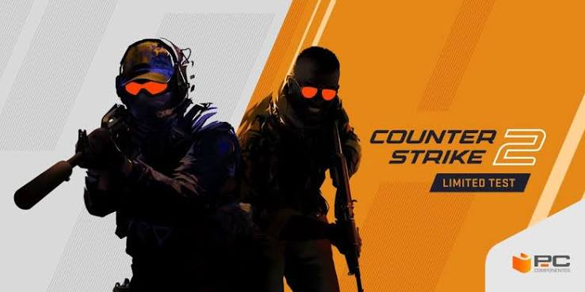
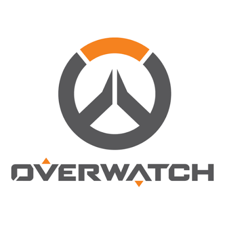

En esta paguina vamos a dar pequeños ejemplos de porque los siguientes juegos que voy a mostrar lo que son para mi los mejores en la actualidad y porque me gustan


Mi top 3 de videojuegos favoritos son:Counter-Strike 2, Overwatch y Zenless Zone zero.
Estos títulos no solo me han ofrecido incontables horas de diversión, sino que también me han marcado por sus historias profundas, mundos abiertos inolvidables y bandas sonoras magistrales. Cada uno de ellos representa una etapa diferente de mi vida como jugador y la razón por la que considero al videojuego como una forma de arte.
Hoy vamos a repasar los que para mi son los mejores juegos que he probado este año:
-saga de videojuegos de disparos tácticos en primera persona (FPS) en línea, desarrollada por Valve.
Mencion Honorífica
Valorant
EA Sports 27
Read Dead Redemtion 2
Cyberpunk 2077
Juegos de Hoyoverse:
Honkai star rail
Genshin Impact
Impact 3D
¿Porque considero que son los mejores?
Son muy divertios
Se pueden jugar con amigos
Son desafiantes
Tienen mucho contenido para jugar
Van a durar muchos años activo
Peso de los juegos en tu computadora
Tamaño de los Juegos
Counter-Strike:
35 GB
Overwatch:
72 GB
Zenless zone zero:
75 GB
Jugadores que hay en cada juego
Estadísticas estimadas de jugadores activos en PC y Consolas (2026)
Categoría de Juego
Videojuego
Jugadores Mensuales Activos
Pico de Concurrentes (Diario)
Shooters / Acción
Counter-Strike 2
~35 - 40 Millones
~1.3 - 1.4 Millones
Overwatch 2
~11 - 16 Millones
~350,000 - 500,000
Valorant
~25 - 28 Millones
~900,000
RPGs / Anime
Zenless Zone Zero
~20 - 25 Millones
~1.1 Millones
Genshin Impact
~60 - 65 Millones
~4.5 Millones
Total de registros analizados:
5 Videojuegos
Tienen una increible banda sonora
Counter strike Overwatch Zenless zone zero
¿Qué es el "Tickrate" en Counter-Strike?
El tickrate es la frecuencia con la que el servidor de un juego actualiza lo que ocurre en la partida por segundo. Mientras que la mayoría de los shooters convencionales operan a 60Hz, Counter-Strike 2 introdujo un sistema de Sub-tick diseñado para registrar tus disparos y movimientos en el milisegundo exacto en que ocurren, independientemente de los FPS de tu monitor.
Especificaciones recomendadas de hardware para PC (Componentes clave)
Distribuidor / Motor
Videojuego
Procesador Recomendado (CPU)
Tarjeta Gráfica Recomendada (GPU)
Motores Propios (Occidente)
Counter-Strike 2
Intel Core i5-7500
NVIDIA GTX 1060 (6GB)
Overwatch 2
Intel Core i7 o AMD Ryzen 5
NVIDIA GTX 1650 / AMD RX 6400
Zenless Zone Zero
Intel Core i7 (10ª Gen)
NVIDIA GTX 1660 o superior
Total de perfiles técnicos analizados:
3 Videojuegos
Con este email puedes contactar con migo,si tienes opiniones distintas o quiere aportar algo
Lucastitan@alumno.ilerna.com